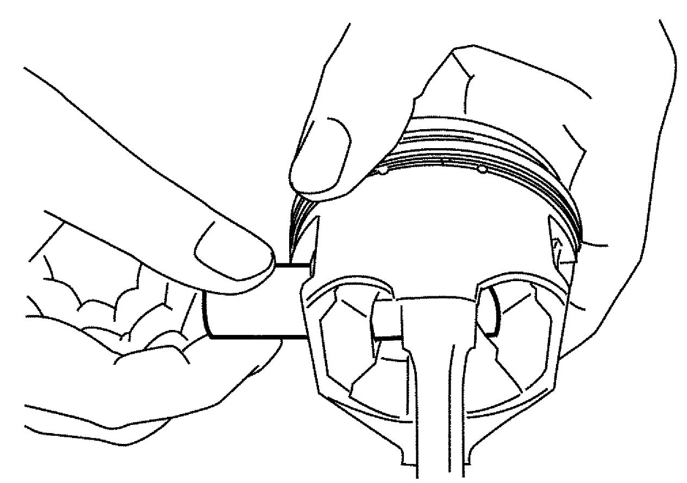
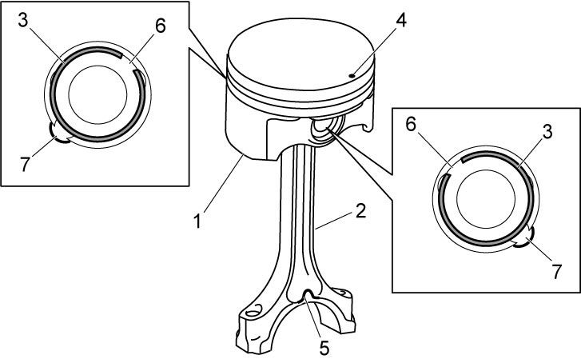
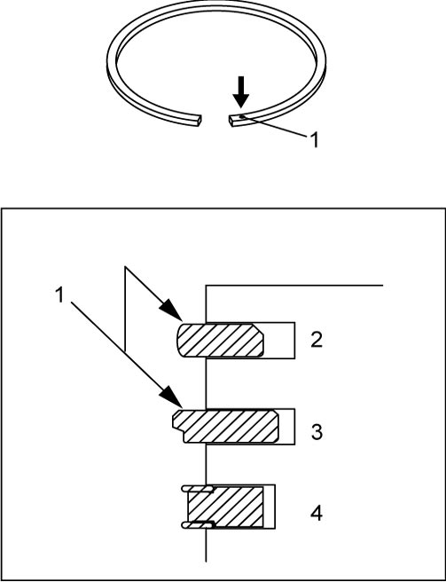
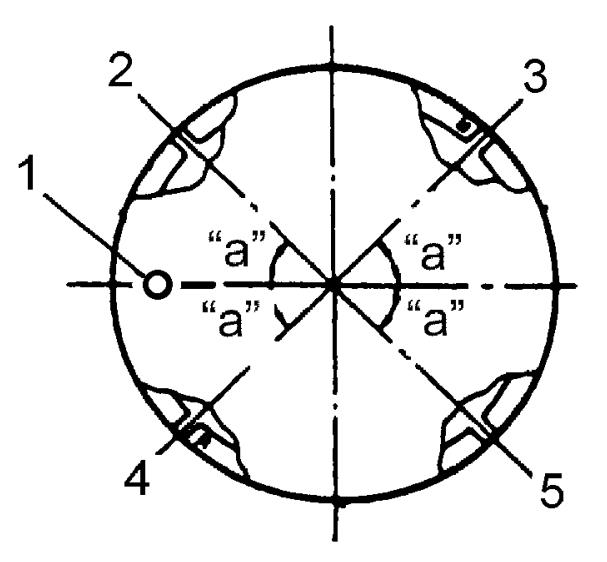

1D
| Piston, Piston Ring, Connecting Rod and Cylinder Disassembly and Reassembly |
NOTICE:
If any of the parts listed below is reinstalled into a position different from the original position, engine problems could occur.
If these parts are to be reused, keep them in numerical order so that they can be reinstalled in their original positions.
•Pistons
•Piston pins
•Piston rings
•Connecting rods
•Connecting rod bearings
•Piston pins
•Piston rings
•Connecting rods
•Connecting rod bearings
Disassembly
1)Using a piston ring expander, remove 1st ring, 2nd ring and oil ring from piston.
2)Remove piston pin from piston and connecting rod as follows.
a)Remove piston pin circlips (1), as shown.


 "Expand image")
b)Remove piston pin.

 "Expand image")
Reassembly
NOTICE:
The engine will seize up if it is operated when the parts listed below are not properly lubricated.
Lubricate all the friction surfaces of these parts with engine oil before installing them.
•Pistons
•Piston pins
•Piston rings
•Connecting rods
•Connecting rod bearings
•Piston pins
•Piston rings
•Connecting rods
•Connecting rod bearings
1)Remove carbon deposits from piston head and ring grooves using a suitable tool.
2)Install piston pin to piston (1) and connecting rod (2) as follows.
a)Apply engine oil to piston pin, piston pin hole in piston and connecting rod.
b)Fit connecting rod positioning front mark (protrusion) (5) on connecting rod big-end piston and front mark (4) on piston as shown in figure.
c)Insert piston pin into piston and connecting rod.
d)Install new piston pin circlips (3).
e)Face opening (6) of piston pin circlip toward opposite to cutout (7).

 "Expand image")
3)Install piston rings to piston noting the following points.
•As shown in figure, 1st and 2nd rings have top mark (1) respectively. When installing them, face each top mark upward.
•1st ring (2) differs from 2nd ring (3) in shape contacting cylinder wall.
•Since the thickness of 1st ring and 2nd ring is the same, distinguish them by the figure.
•When installing oil ring (4), install spacer first and then two rails.
•1st ring (2) differs from 2nd ring (3) in shape contacting cylinder wall.
•Since the thickness of 1st ring and 2nd ring is the same, distinguish them by the figure.
•When installing oil ring (4), install spacer first and then two rails.

 "Expand image")
4)After installing three rings (1st, 2nd and oil rings), distribute their end gaps as shown in figure.

 "Expand image")
| “a”: | 45° | 3. | 1st ring end gap |
| 1. | Front mark | 4. | 2nd ring end gap and oil ring spacer gap |
| 2. | Oil ring upper rail gap | 5. | Oil ring lower rail gap |